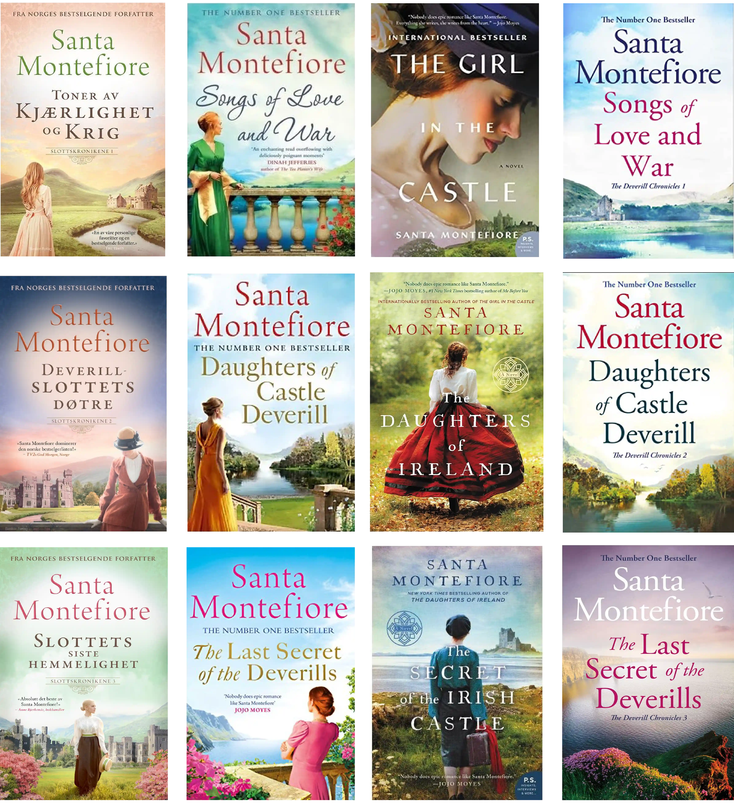
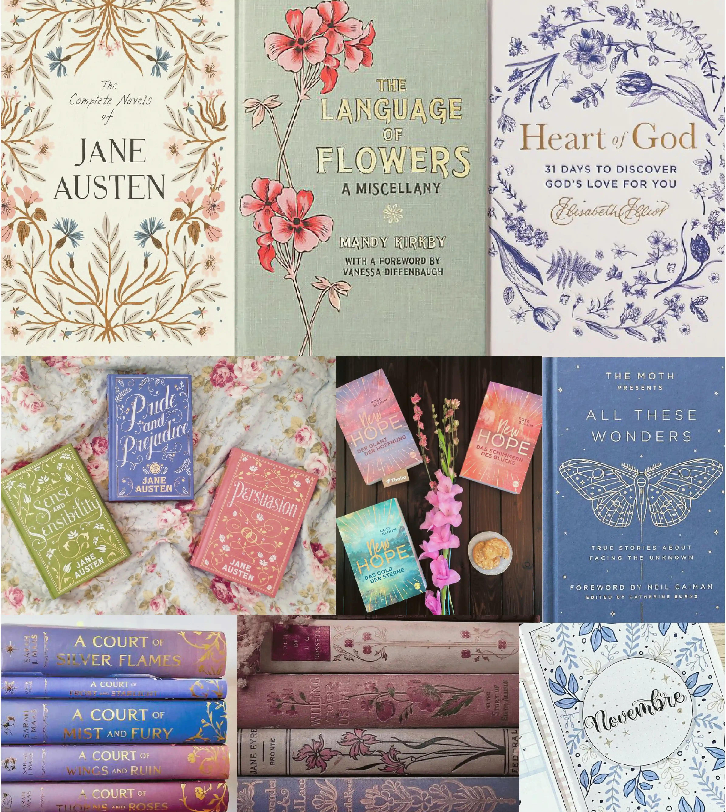
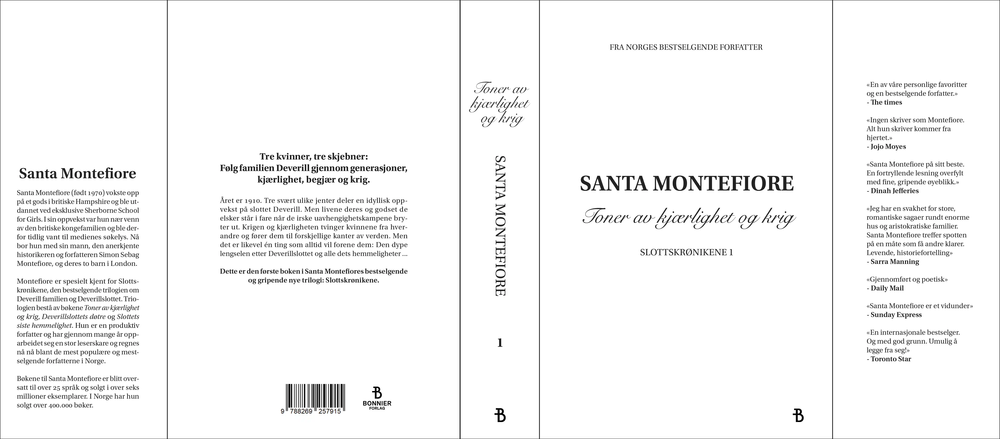

Redaksjonell design
Slottskrønikene
Skoleprosjekt
Denne oppgaven gikk ut på å designe smussomslag, perm og forsats/baksats til en skjønnlitterær bokserie for voksne bestående av tre bind. I tillegg skulle vi velge papirkvalitet, innbindingsløsning og materiale.
Jeg valgte å redesigne de første bøkene i serien «Slottskrønikene» som er skrevet av Santa Montefiore. De tre bøkene fikk hver sin pastell farge, hvert sitt mønster med blomster og hvert sitt bilde av et slott.
Verktøy: Procreate, InDesign & Photoshop
Innsiktsarbeid
Før jeg startet på designprosessen utførte jeg en del innsiktsarbeid for å finne ut hva slags design stil jeg burde gå for.
Ulike utgaver
Jeg startet med å se på hva slags utgaver som finnes av Slottskrønikene. Forsidene til bøkene endrer seg ut ifra hvilket land de har blitt utgitt i, og det finnes derfor flere ulike design, men virker som alle har det samme typiske «dameroman»-designet med en dame som står med ryggen til.
Inspirasjon
Deretter prøvde jeg også å finne inspirasjon. Jeg visste allerede hvordan type design jeg ønsket å lage, og prøvde å finne bilder på Pinterest som ga det samme uttrykket som målet mitt.
Designprosess
Designprosessen til dette prosjektet var ganske rett fram siden jeg allerede hadde en relativt klar idé fra starten av på hva jeg ville gjøre.
Testing av skrift på forsiden
Det første jeg gjorde var å teste ut ulike skrifttyper og oppsett på forsiden til den første boka.
Plassering av tekstinnhold
Jeg endte tilslutt opp med å bruke skrifttypene «Snell Roundhand» og «Utopia Std» siden disse fungerte best sammen, og endte opp med å sette opp teksten på alle bøkene på denne måten.
Utvikling av detaljer
Jeg visste fra starten av at jeg ønsket å inkludere et mønster laget av blomster i designet mitt, så jeg startet med å tegne opp et mønster av tulipaner til bok 1.
Ferdig resultat av detaljer
Underveis i prosessen innså jeg at mønsteret fungerer best som et ornament og ikke burde være hovedfokuset på bøkene. Derfor endte jeg opp med et ensfarga mønster som enkelt kan blende inn med bakgrunnen. I tillegg fikk hver av bøkene hvert sitt mønster, hvert sitt bilde av et slott og hvert sitt hjerte.